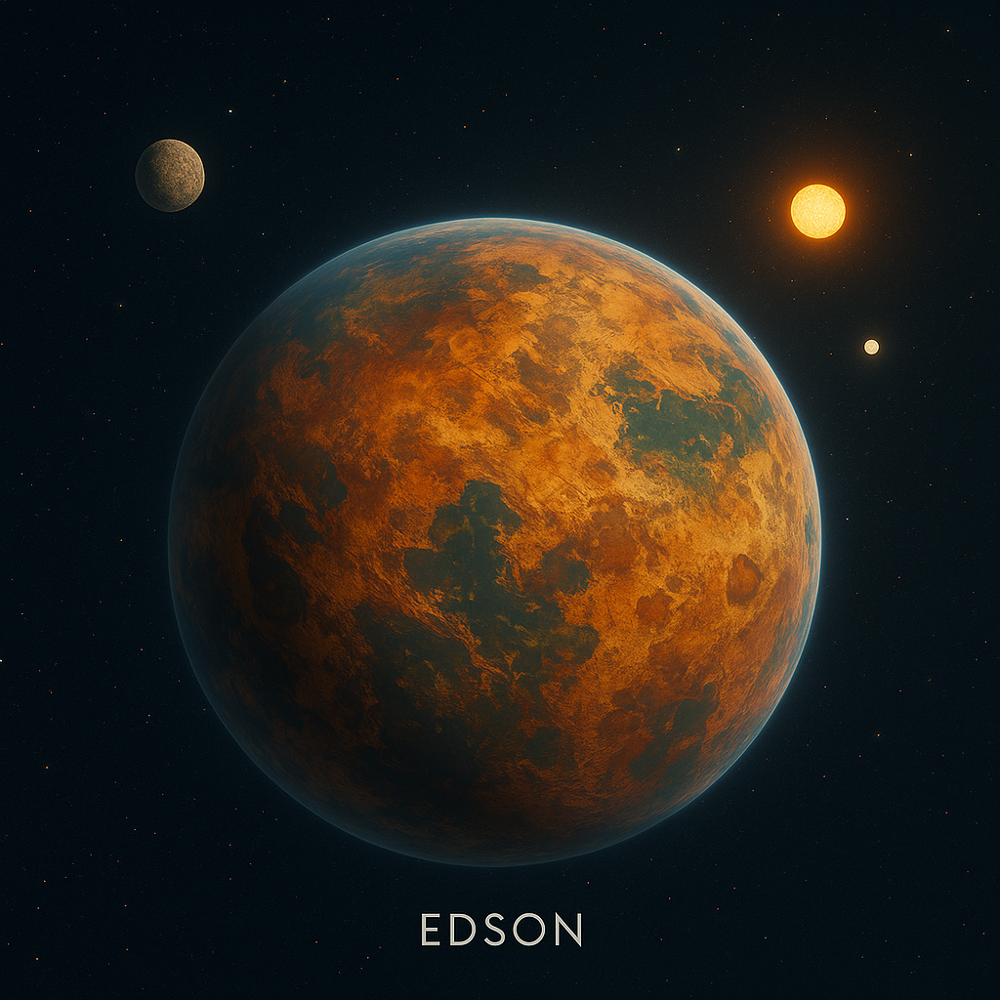

Description
Status: Dead World (~-900 AE)
Epsilon Caedus: Edson’s solar system
Suns: two suns (Aethera and Nyros)
Moons: two moons (Marrow and it’s smaller sister, Tessil )
Edson was a forested, fertile world, home in the Middle Edsonian Era (~-1000 AE) to a high-tech society bound by ancient rites and the honor of the blade. Vear came here twice—first at age seventeen, and again 10,000 years earlier, in an age of hand-forged weapons and simple machines. His presence reshaped the planet’s destiny, giving birth to a legend that endured long after Edson’s unexplained fall.
Notable City: Arden (ruled by King Marek during Middle Edsonian Era)
Legacy: Vear's myth was born here and endures in the ruins.
Nyros’s Orbit – The Nyric Cycle
Nyros completes its long, elliptical orbit around Aethera every 312 Edsonian years. Its closest approach marks a period known as the Crimson Ascension, during which Nyros dominates the sky with an ominous red glow.
This rare celestial alignment is central to Edsonian myth and prophecy. Temples, trials, and ancient prophecies are often bound to the Nyric Cycle. Many believe that the appearance of Nyros marks moments of great change, as if the cosmos itself were watching.
In ancient texts, it is written: "When the Watcher burns low and red above the twin peaks, the Dreamer shall rise again, and time shall twist to his choosing."
Lore Explanation: The Stagnation of Ancient Edson
1. The Shattered AgeMore than twenty thousand years before the rise of the Authority, in an age later remembered as the Shattered Age, Edson did not merely gleam with promise—it blazed with mastery. Its people were not born of this world alone, but were children of Earth, carrying fragments of a deeper legacy across the stars. From those fragments they forged wonders: cities suspended on lattices of crystal and light, engines that bent gravity itself, networks of energy pulsing across continents. They spoke through the air, crossed oceans in heartbeats, and shaped matter as easily as clay.
But the brilliance was fragile. The Shattered Age ended with the Great Sundering—a cataclysm of devastating war and a solar flare so vast it erased nearly all advanced knowledge and collapsed the very infrastructure that sustained them.
2. The Surviving Societies
In the aftermath, surviving societies fell back on traditions that had proven reliable and accessible: swords, shields, and close combat.3. The Technological Prohibition
Out of fear of repeating past destruction, Edson’s religious and cultural leaders issued the Edict of Balance—a sacred decree forbidding the pursuit of technologies beyond hand-forged weapons and simple machines. The Council of Ancients, a ruling body, enforced the edict with strict control of knowledge and harsh punishment for innovation, convinced that advanced technology had once brought ruin. In this order, the warrior clans known as the Shieldbearers rose to prominence, upholding strict codes of honor that framed swordsmanship and shield defense as sacred arts—symbols of survival and unity.4. Resource Scarcity and Isolation
Ancient Edson’s geography changed after the Great Sundering. Valuable ores and rare minerals essential for complex machinery became scarce due to seismic shifts, while vast mountain ranges and dense forests cut off trade routes. The people lived isolated, sustaining their communities with traditional crafts.5. A Long Wait
Over millennia, the Edict and isolation fostered a cultural reverence for the old ways. Only a few whispered tales of lost wonders survived. Progress was slow, largely limited to weapon craftsmanship, tactics, and social organization.6. This Sets the Stage for Future Edson
The future Edson rediscovered advanced technologies after breaking free from the Edict’s restraints. Space travel and modern science marked a renaissance rising from the ashes of the Shattered Age. Old engines, reactors, and weapons were unearthed, and kingdoms hungered for power beyond balance or restraint.The Shieldbearers resisted, but their order had grown too thin to restrain entire nations. Legends say that, in desperation, one Shieldbearer turned to an ancient artifact said to obey its wielder. But instead of purging corruption, it unmade the world. Forests to ash. Seas to silence. Cities to dust.
Edson became a dead world.